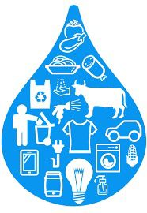

Es el volumen total de agua dulce que se utiliza directa o indirectamente para producir los bienes y servicios que consumimos, desde la comida hasta la ropa o la energÃa.

¿Cómo reducirla?
Dúchate en menos tiempo y arregla fugas en casa.
Consume menos carne y productos industrializados.
Reutiliza agua cuando sea posible.
Compra ropa y productos con menor huella hÃdrica.